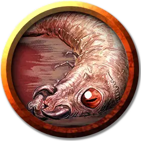

Ледяной пронзатель
Ice Piercer
Средний Монстр, без мировоззрения

Класс Доспеха 15 (природный доспех)
Хиты 22 (3к8 + 9)
Скорость 5 футов, лазая 5 футов
| мод | спас | ||
|---|---|---|---|
| СИЛ | 10 | +0 | +0 |
| ЛОВ | 13 | +1 | +1 |
| ТЕЛ | 16 | +3 | +3 |
| мод | спас | ||
|---|---|---|---|
| ИНТ | 1 | −5 | −5 |
| МДР | 7 | −2 | −2 |
| ХАР | 3 | −4 | −4 |
Навыки Скрытность +5
Чувства слепое зрение 30 футов, тёмное зрение 60 футов, пассивное Восприятие 8
Опасность 1/2 (100 опыта)
Бонус мастерства +2
Особенности
Обманчивая внешность. Пока пронзатель остается без движения на потолке, он неотличим от обычного сталактита.
Паучье лазание. Пронзатель может лазать по сложным поверхностям, включая потолки, без совершения проверок характеристик.
Действия
Падение. Рукопашная атака оружием: +3 к попаданию, одно существо, находящееся точно под пронзателем. Попадание: Колющий урон 10 (3к6) за каждые 10 футов падения, вплоть до 21 (6к6), плюс 10 (3к6) урона холодом. Промах: Пронзатель получает половину обычного урона за падение.
Описание
Аурил Морозная Дева превратила сосульки в существ, напоминающих пронзателей.
Цепляясь за потолки пещер и больших подземных ходов, пронзатель прекрасно сливается со скалами, обрушиваясь в тишине на ничего не подозревающих врагов и прижимая их к земле.
Пронзатель является личиночной формой веревочника, и эти два существа часто атакуют в тандеме. Тело пронзателя покрыто похожей на камень оболочкой, придающей ему вид и текстуру сталактита. Эта оболочка защищает мягкую, студенистую верхнюю часть тела пронзателя, при помощи которой он передвигается по стенам и потолку пещеры, ища место для засады. Когда глаза и рот пронзателя закрыты, его трудно отличить от обычных скальных образований.
Терпеливый охотник. Пронзатели обладают зрением, но также реагируют на шум и тепло, ожидая живых существ, проходящих под местом засады. Они нападают, обрушиваясь на них. Промахнувшийся пронзатель вынужден проделать медленный путь обратно на потолок. Упавший пронзатель, при атаке на него, выделяет дурно пахнущую слизь, и многие хищники думают дважды, прежде чем съесть его.
Для увеличения эффективности атак пронзатели собираются в колонии и обрушиваются одновременно, чтобы более успешно поразить добычу. Как только одному из них удается убить существо, все остальные ползут в направлении трупа и присоединяются к пиру.